Polimento F1–F4: o que dá para melhorar
Análise de 14/10/2026. Nada foi mudado no jogo: as imagens de “depois” são simulações ou trocas feitas na memória do navegador.
Como foi feito
- A campanha inteira, quadro a quadro: menu → F1 → cutscene → F2 → … → F4 → cutscene final → tela de vitória, fotografada a cada 2s de jogo (401 fotos), com mesas de cartas, minichefões e chefões.
- As 4 cutscenes de novo, em tempo real, porque a varredura quadro a quadro roda o jogo mais rápido que o relógio das animações e engana em tudo que depende de tempo (veja “Conferido e descartado”).
- Causa medida, não chutada: para cada suspeita, o jogo foi pausado no trecho e perguntei quais objetos cobrem aquele pixel (textura, camada, escala, tint), além de medir as bordas e o brilho das peças.
- Ferramentas novas, que servem para conferir depois de consertar:
scripts/_polimento/.
Prioridade alta: emendas e encaixes
ALTA1 · Silhuetas escuras antigas por cima e por baixo da borda da F4 · seu print 1 · esforço pequeno
- Onde
- F4, câmara A e câmara azul do golfinho (t≈1 a 65). No duto e na arena final não acontece.
- O que se vê
- Massas escuras de borda serrilhada “mordendo” a borda: parece cortado ou mal encaixado.
- Causa
- Duas camadas de silhueta
derelictdo parallax, da F4 de antes daMoldura:- bandas de placas atrás da borda (chão e teto). Medido: invadem o corredor até 24–27px no começo e 6–15px na câmara azul, em boa parte das colunas;
- silhuetas de primeiro plano (escala 1,6–1,9, na frente de tudo), que passam por cima da borda nas pontas da tela.
- Solução
- Com a borda desenhada, tirar as duas bandas: a borda já é o chão e o teto. No primeiro plano, ou ele sai da F4 ou fica limitado ao meio do corredor, sem cruzar a borda. A foto de baixo é o mesmo quadro com as silhuetas desligadas.
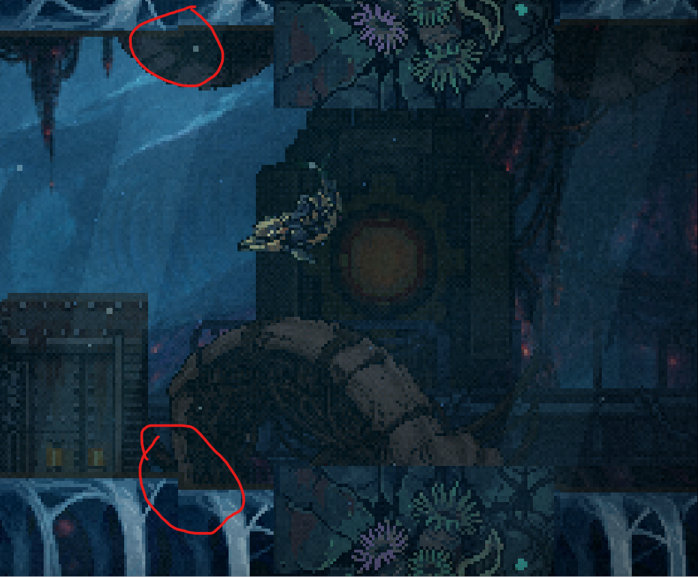
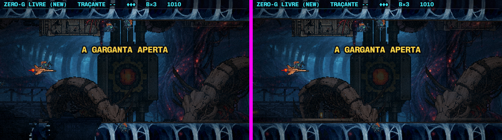
derelict desligadas.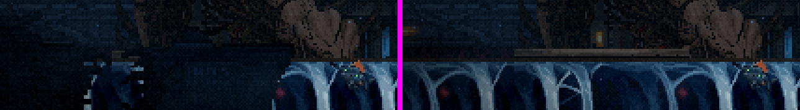
ALTA2 · Parede do duto com emenda a cada 128px · seu print 2 · esforço médio
- Onde
- F4, duto (t≈68 a 106), teto e chão.
- O que se vê
- Uma linha vertical a cada peça: de um lado escuro, do outro claro, e a faixa de lava acesa cortada.
- Causa
- A peça
f4-faixa-cnão ladrilha. A borda esquerda tem brilho 25,6 e a direita 8,1 (três vezes mais escura). A diferença entre as colunas da ponta é 80 por linha, contra 10–14 nas bordas das outras câmaras. - Solução
- Refazer a peça para ladrilhar: tirar o degradê da esquerda para a direita e emendar as pontas (a simulação abaixo faz as duas coisas automaticamente). Na arte final, convém deslocar meia peça, retocar a costura no meio (à mão ou por inpaint) e voltar. A “saia” espelhada do duto herda a correção.

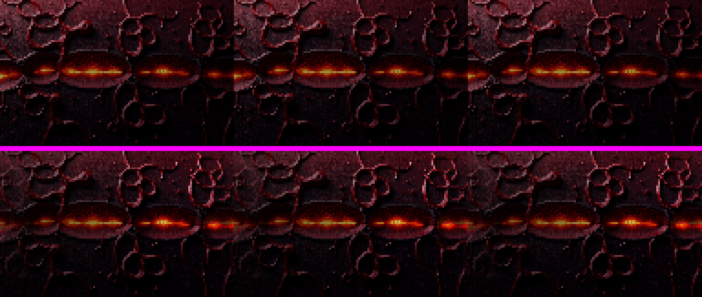
ALTA3 · Costelas azuis: a mesma emenda, mais branda · esforço pequeno
- Causa
f4-faixa-b: brilho 38,6 à esquerda e 58,9 à direita. A estrutura das costelas disfarça, mas a troca de brilho a cada 128px continua.- Solução
- A mesma do item 2.
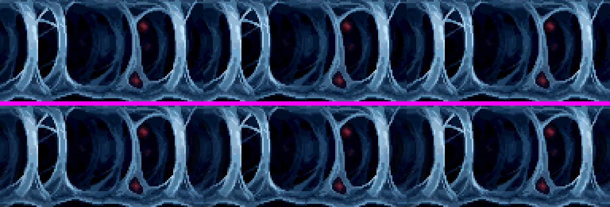
ALTA4 · Fim do duto e troca de câmara com borda reta · esforço médio
- Onde
- F4, saída do duto para a arena do Esfíncter (t≈110 a 113); o mesmo vale para toda troca de pintura de câmara.
- O que se vê
- A parede vermelha do duto termina num corte vertical; vem um pilar de pedra solto; e a pintura da câmara nova entra com uma linha vertical reta no meio do corredor.
- Causa
- A pintura nova (
paintBgF4d) entra por cima da anterior com borda dura. O pilar da junta foi feito para tapar a emenda das bordas, não a do fundo. - Solução
- Fazer a pintura entrar com uma passagem suave de ~48px (simulação abaixo) e fechar o fim da parede com um remate (a junta ou um degrau inclinado), em vez do corte reto.
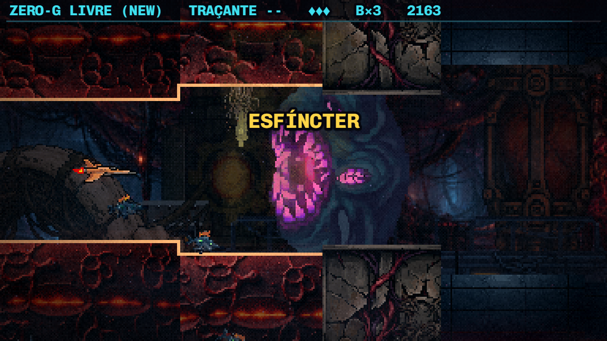
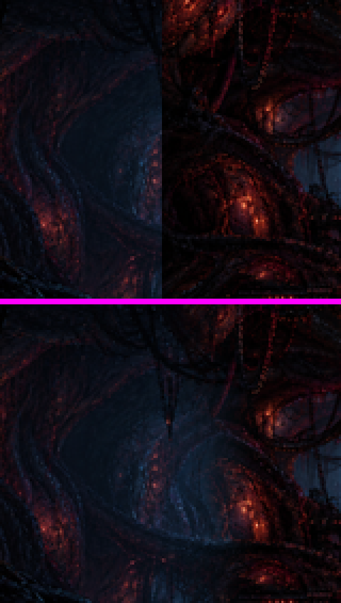
ALTA5 · Caixas pretas no céu da F2 e da F3 · esforço pequeno
- O que se vê
- Retângulos escuros de laterais retas no meio da nebulosa, além de áreas mais escuras de borda reta.
- Causa
- A peça do cinturão denso (
belt-2) termina em corte reto dos dois lados. Com o tint escuro e a escala, vira uma placa retangular. Na F3 ela fica ainda por cima da pintura opaca da nebulosa (camada −93 sobre −96), assim como o cinturão e os cascos que vieram do vácuo da F2. - Solução
- Dissolver as pontas da peça (simulação abaixo). Na F3, avaliar tirar essas camadas da F2 de cima da pintura: a pintura já é o céu.
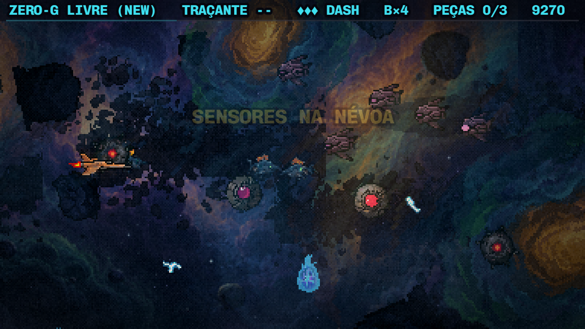
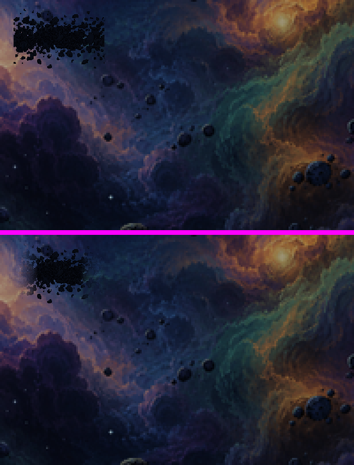
ALTA6 · A cauda do Leviatã ampliada 3,4× · esforço médio (arte)
- Onde
- F3, a virada para o ato 2 (o casco “gigante” que passa por trás).
- Causa
raboLeviata(107×73) desenhado comsetScale(3.4): cada pixel vira um bloco de 3–4 pixels de tela. A torre na frente e os inimigos têm pixel de 1. Isso fere a regra do projeto, “reduzir pode, aumentar nunca”.- Solução
- Gerar a cauda no tamanho de tela (~360×250) a partir da arte atual, com a mesma silhueta e as mesmas rachaduras acesas, e usá-la em escala 1.
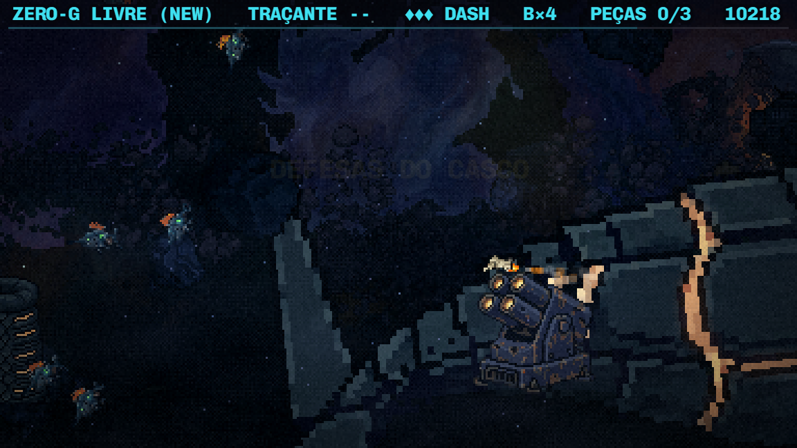
Prioridade média: acabamento
MÉDIA7 · Peças ampliadas acima de 1 (pixel gordo) · esforço médio
- Lista medida
- Perigos:
destroco0,9–1,6 (F2 e F4),asteroid0,7–1,9 (F2/F3). Meio-plano da F4: órgão e maquinário 1,45–1,6, ponte 1,41–1,55. Primeiro plano: 1,3–2,6 (silhuetas escuras, em que o tint disfarça). - Solução
- Teto de escala 1 nos perigos e no meio-plano, desenhando variantes maiores quando o tamanho for necessário. As silhuetas escuras do primeiro plano podem ficar.
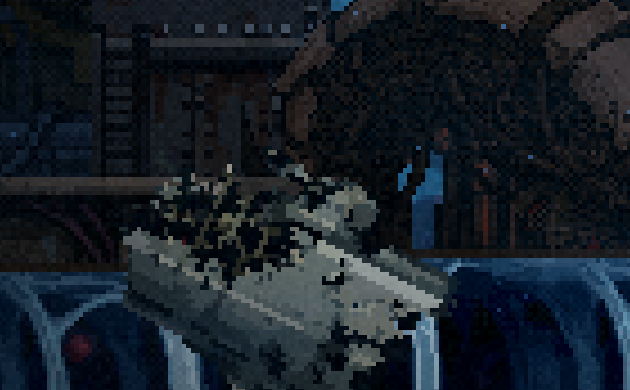
MÉDIA8 · Destroço cinza da F2 dentro do Leviatã · esforço pequeno/médio
- O que se vê
- As placas de nave cinza-claras do cemitério da frota (F2) flutuando no interior vivo, mais claras que todo o resto da F4 (fere o rumo dark sci-fi).
- Solução
- Uma variante da F4 (pedaço de placa orgânica, osso ou carne endurecida) ou, no mínimo, o tint da câmara. A mesma imagem do item 7 mostra o problema.
MÉDIA9 · A fumaça da morte dos chefões são bolinhas · esforço médio
- O que se vê
- Na F1 e na F2, a nuvem após a explosão é feita de círculos perfeitos pretos com miolo marrom: lê como bolinhas, não como fumaça.
- Solução
- Fumaça assada em pixel (quadros de contorno irregular, na paleta da cena), como já fazemos com os efeitos de cena.
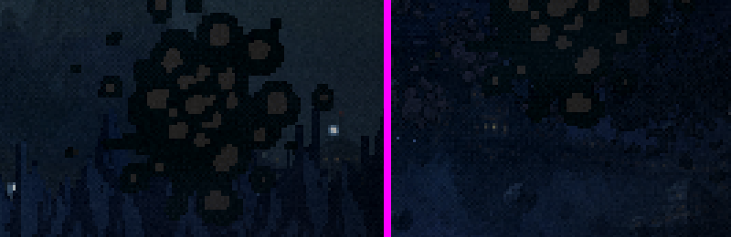
MÉDIA10 · Rótulos de desenvolvimento no HUD · esforço pequeno
- O que se vê
- “1G FLAP (LEGACY)” e “ZERO-G LIVRE (NEW)” no HUD do jogador: são nomes internos da condução. Na luta do chefão, a barra de vida fica colada na linha do HUD.
- Solução
- Tirar o nome da condução (ou trocar por um ícone pequeno de 1G/0G), mantendo arma, vidas, bombas, peças e pontos. Dar folga à barra do chefão.
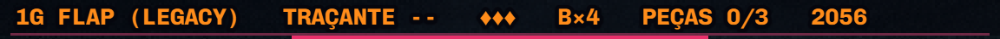
MÉDIA11 · A tela final não pesa o fim da campanha · esforço médio
- O que se vê
- Depois da cutscene final, texto pequeno sobre preto, com o título “FASE 4 COMPLETA” e “O Leviatã caiu” minúsculo embaixo.
- Solução
- Título de campanha (“O LEVIATÃ CAIU”), a pintura do Leviatã caído escurecida atrás, e hierarquia maior para pontos, medalha e recorde.
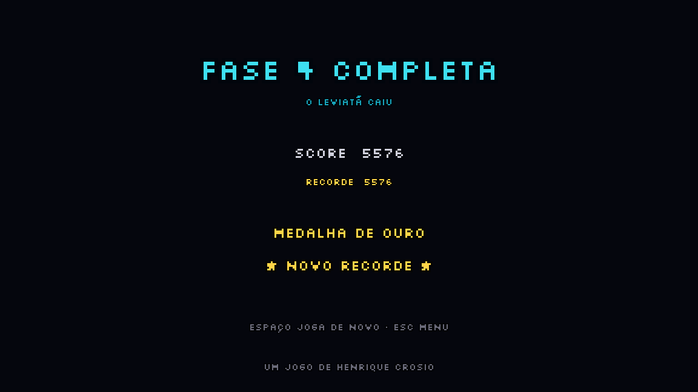
Prioridade baixa: detalhes
BAIXA12 · Subtítulo “REMASTERED” quase invisível no menu
Contraste baixo demais com o fundo. Solução: mais luz no texto ou uma faixa sutil atrás.
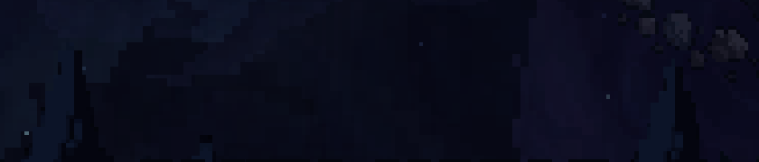
BAIXA13 · Flashes de tela cheia nas cutscenes · decisão sua
Amarelo, ciano e laranja cobrindo a tela inteira por um instante. Funcionam como golpe, mas são fortes; vale baixar a intensidade ou fazer o flash pela vinheta, e pensar em fotossensibilidade. Combina com a decisão do pós-processamento (bloom).
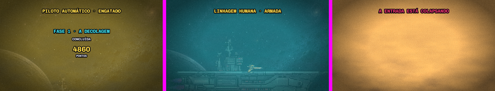
BAIXA14 · Explosão vermelha chapada na cutscene 1
No “IMPACTO · A FROTA CAIU”, as explosões são círculos concêntricos lisos, destoando da pintura. Solução: explosão assada em pixel.
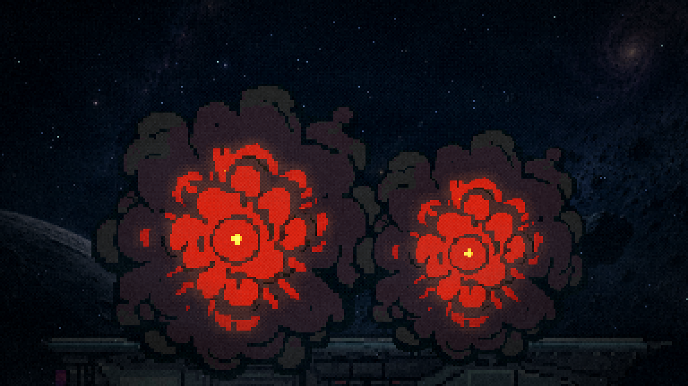
BAIXA15 · Drones em fila, encavalados
Nas ondas em fila (F1, F2), o espaçamento é menor que a largura do sprite e eles se sobrepõem. Solução: espaçamento ≥ largura ou alternar a altura.
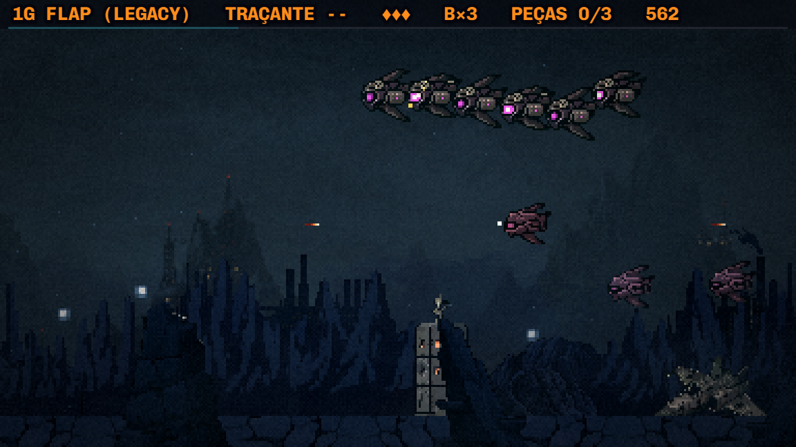
BAIXA16 · Setas diferentes nas dicas de controle
A mesa de cartas usa “[<- ->]” e o painel de nave usa “[←——→]”. Solução: unificar.
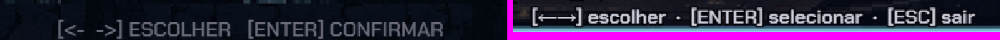
Conferido e descartado
Pareciam defeitos na varredura quadro a quadro, mas não se confirmaram em tempo real ou no código:
- Letreiros de seção que pareciam durar 10–14s duram ~2s reais (entrada 220ms, 1,5s parados, saída 450ms).
- O placar da fase por cima do painel de escolha da nave: em tempo real ele some em ~3s, e o painel abre em 8,6s.
- O nome do chefão sobre o chefão: é o mesmo letreiro de ~2s.
- O sangue na tela no chefão final: ~2s reais.
- Esfíncter e garganta “pixelados”: escala 1 e arquivo nativo; é o desenho chapado, não ampliação.
- Um erro no chefão final durante a varredura foi causado pelo meu script (morte forçada no meio da troca de forma); no jogo não acontece.
- O blecaute no meio da luta da F3 é o escurecimento do casco (t≈48), deslocado pelo mesmo efeito de relógio.
Sobre o pós-processamento
Concordo com a ordem: polir antes. Um shader por cima de uma emenda deixa a emenda bonita, mas ela continua lá. Algumas observações para quando chegarmos lá:
- O jogo já tem a Atmosfera por cena (pilar 5 do GDD). O pós-processamento deveria ser a camada final unificada sobre ela, não um substituto.
- Aplicar no quadro nativo 384×216, antes de ampliar, para não borrar o pixel. A camada HD do texto fica de fora.
- Candidatos: bloom só onde há luz (lava, núcleos, tiros), gradação de cor por fase, vinheta leve, grão único para o jogo todo; CRT/scanlines como opção nas configurações.
- Os itens 5 e 13 conversam com o bloom: vale decidir os dois juntos.
Próximo passo
Você escolhe o que entra e em que ordem. A minha sugestão é começar pelos itens 1 a 5, que são as emendas que você apontou e têm causa e solução comprovadas, e deixar o 6 (arte nova) e o 7 (escalas) para uma rodada de arte. Depois de cada conserto, a varredura e as consultas de scripts/_polimento/ conferem o resultado no mesmo trecho.